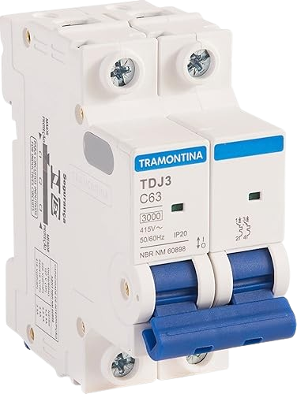
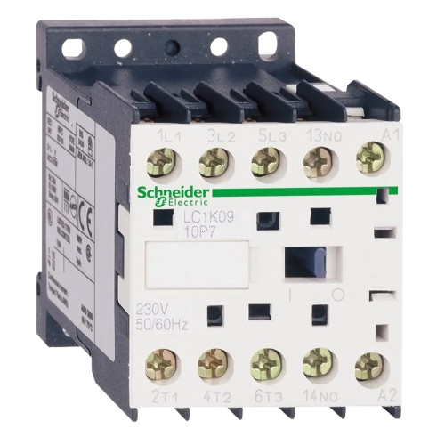

Conceitos de eletrônica
Disjuntor
É um dispositivo de manobra e proteção termo-magnética do circuito elétrico. Ele monitora a corrente e desarma (abre o circuito) automaticamente quando detecta uma sobrecarga (aquecimento lento) ou um curto-circuito (pico abrupto de corrente). É um elemento de proteção da fiação, não da carga diretamente.

Contator
É um dispositivo eletromecânico que funciona como uma chave acionada magneticamente. Ele possui uma bobina interna que, quando energizada, cria um campo magnético que atrai os contatos elétricos, fechando-os para permitir a passagem de correntes elevadas (circuitos de potência) a partir de correntes baixas (circuitos de comando).

Botão de Pulso (Botoeira)
É um dispositivo de comando manual que não possui retenção mecânica. Ou seja, ele só altera o estado dos seus contatos (abre ou fecha) enquanto estiver sendo pressionado. Ao soltar o botão, ele retorna à posição original graças a uma mola interna.

Chave Manopla ou Retenção
Ao contrário do botão de pulso, a chave com retenção (ou manopla rotativa) muda de estado e permanece na nova posição mesmo depois que o operador retira a mão. Ela exige uma nova ação manual para voltar à posição inicial.
Sensor Fim de Curso
É um dispositivo eletromecânico que detecta a presença física ou o posicionamento de um objeto em movimento. Ele possui uma haste, rolete ou alavanca que, ao ser tocada mecanicamente pela máquina, altera o estado de seus contatos elétricos.
Motor Elétrico de Indução Trifásico
É uma máquina elétrica que converte energia elétrica trifásica em energia mecânica (rotação). Ele funciona com base nos princípios do eletromagnetismo, onde as correntes nas bobinas do estator criam um campo magnético giratório que "induz" uma corrente no rotor, fazendo-o girar sem a necessidade de escovas físicas.
Relé Temporizador
É um dispositivo que introduz um atraso de tempo predeterminado na abertura ou fechamento de seus contatos elétricos. Pode ser do tipo "Retardo na Energização" (espera um tempo para ligar após receber energia) ou "Retardo na Desenergização" (espera um tempo para desligar).
Disjuntor Motor
É um dispositivo magnetotérmico robusto focado especificamente na proteção integral de motores elétricos. Ele une as funções de um disjuntor comum (proteção contra curto-circuito) com as de um relé térmico (proteção contra sobrecarga ajustável) em um único componente, suportando os picos de corrente da partida do motor sem desarmar.
Relé Térmico
É um dispositivo de proteção que atua por efeito térmico (geralmente lâminas bimetálicas). Ele monitora a corrente que vai para o motor. Se o motor trabalhar forçado e a corrente subir um pouco além do limite por muito tempo, as lâminas se aquecem, dobram e abrem o circuito de comando, desligando o contator. Nota: Ele não protege contra curto-circuito.
Multímetro
É o instrumento de medição essencial para eletricistas e técnicos. Ele combina várias funções de medição em um único aparelho, sendo capaz de medir Tensão (Voltímetro), Corrente (Amperímetro), Resistência (Ohmeímetro) e continuidade elétrica.